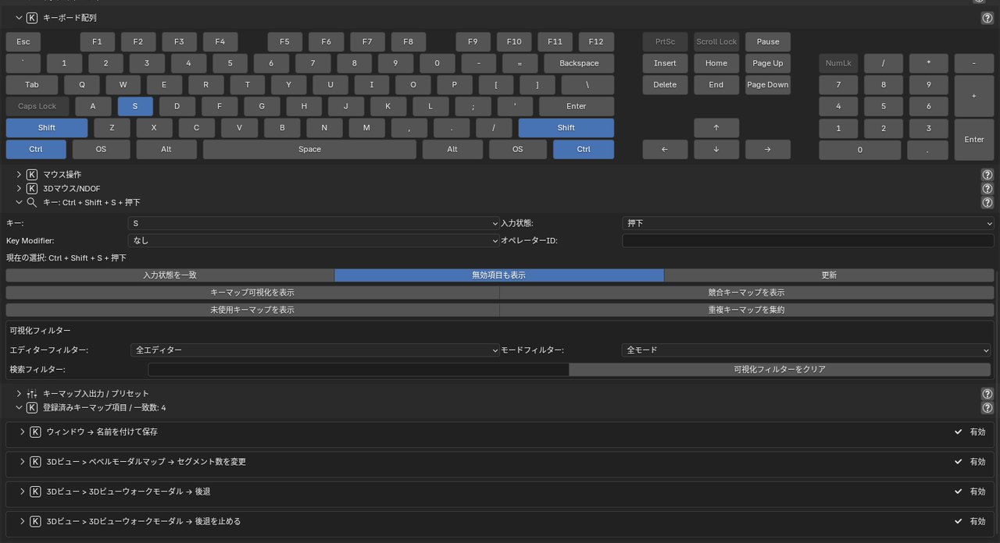

Smart Tools Manager
スマートツールマネージャー
SmartTools 全体を管理するためのツールです。ワークスペースとエディターの組み合わせごとに、どのスマートツールのパネルを出すかを、一つの画面でまとめて決めます。
SmartTools
版 1.0.0 ／ Blender 5.1.0 以上 ／ アドオン 23 個
モデリング・UV・材質・ペイント・リグ・アニメーション・撮影・画面の管理を手助けする、23 個の Blender アドオンの集まりです。ZIP をダウンロードして Blender に入れ、アドオンごとの解説書を見ながら使えます。
SmartTools 全体を管理するツール、5 つの分野のアドオン、付属ツールに分けています。画像か名前を押すと、そのアドオンの解説書が開きます。どの解説書にも、ページの上に前後の解説書・PDF・ZIP への入り口があります。
SmartTools 全体を管理するためのツールです。ほかのアドオンのパネルをどの画面に出すかを、一つの画面でまとめて決めます（全体仕様書 6 章）。
スマートツールマネージャー
SmartTools 全体を管理するためのツールです。ワークスペースとエディターの組み合わせごとに、どのスマートツールのパネルを出すかを、一つの画面でまとめて決めます。


スマートスカルプト スイート
スカルプト（粘土をこねるように形を作る作業）の道具をサイドバーの「Smart Sculpt」タブにまとめ、メッシュ編集モードのままでもブラシやフィルターで形を整えられるアドオンです。

スマートトランスフォーム スイート
物の位置・回転・大きさを数字でぴったり決めたり、クリックやドラッグで動かす操作を使いやすくしたりする道具をまとめたアドオンです。

スマートノード スイート
散らかったノードをボタン 1 つで読みやすく並べ直し、選んだノードの結合・配線や、つながりをたどった選択・囲みもサイドバーのボタンで行うノード作業ツールです。


スマートシェーダー スイート
マテリアル（物の見た目の設定）の作成、トゥーン化、テクスチャの取り込み、整理、点検を、サイドバーの 1 つのタブからまとめて行うアドオンです。

スマートUV スイート
シームの位置を自動で決める「自動シーム」から、展開・記号のボタンでの整列・18 種類のプリセットで並べる自動パッキング・ベイクまでを、サイドバーの「Smart UV」タブ 1 つにまとめたアドオンです。


スマートクロス スイート
服のクロス（布のシミュレーション）の準備・軽量化・点検・安全なベイクと、剛体（Quick Rigid）・骨の揺れ（Jiggle Physics）を、サイドバーの 1 つのタブでまとめて扱うアドオンです。


スマートセレクター スイート
ブラウザーの窓に自分専用のボタン画面（セレクター）を作り、押すだけで Blender の骨を選んだりシェイプキーを動かしたりできるアドオンです。基層を壊さずに動きを重ねる「層」と、選んだ物を名前で覚える「選択セット」も入っています。

スマートシェイプキー スイート
シェイプキー（形の変化）を作る・整理する・動かす道具と、顔の収録を焼き込む道具を、サイドバーの 1 枚のパネルにまとめたアドオンです。


スマートオーバーレイ スイート
3D ビューに、頂点・辺・面の見やすい色付け、裏側の表示、トポロジーの検査、プロポーショナル編集の範囲、寸法などを重ねて表示するアドオンです。

スマートワークスペース スイート
よく使うサイドバー（N パネル）のタブをポップアップのボタン 1 つで開く「クイックランチャー」を中心に、タブの名前と並びの整理・表示の軽量化・画面配置の保存を 1 つのタブにまとめた作業環境ツールです。
SmartTools に付属するツールです。

ZIP は展開せずに、そのまま Blender に入れます（入れ方）。
| アドオン | ファイル | 大きさ | SHA-256 |
|---|---|---|---|
| Smart Tools Manager | SmartToolsManager_1.0.0.zip | 83 KB | 744fbb33fb262554dada5a1d083142f83361af472506ebe3b6a8fdaa2c8acee8 |
| SmartGeometry Suite | SmartGeometrySuite_1.0.0.zip | 675 KB | 516121af86f009da4e76526e58184e56c0557b9fb32ed4e0d8cbe9b7b5d041fa |
| SmartModeling Suite | SmartModelingSuite_1.0.0.zip | 3,050 KB | 487291b5ac7a167c635df81b7303f613f1e7d8666f57f29142d2928ed3478946 |
| SmartModifier Suite | SmartModifierSuite_1.0.0.zip | 1,581 KB | 7c071dd90cf35e58f47e3cb8ece94283e07a667d2b67c0f7029d332fe486c80f |
| SmartSculpt Suite | SmartSculptSuite_1.0.0.zip | 10,772 KB | dcb85a58ad6fec39a3467cab7932669814ef34cfe71551d6a51cb655894c54ed |
| SmartTransform Suite | SmartTransformSuite_1.0.0.zip | 649 KB | 421513e6d501d57a91b5dcb1a51870008ac913efd79259291d1984d7ddef77ac |
| SmartNode Suite | SmartNodeSuite_1.0.0.zip | 398 KB | bac97b59ef84def291279b77891a857651aaf116e939e8ff22c19a983366b53b |
| SmartPaint Suite | SmartPaintSuite_1.0.0.zip | 954 KB | 527b352bff80c7a4b822c8b7707d120dcc5ca838fd3f5b88e36d2f30927c197d |
| SmartShader Suite | SmartShaderSuite_1.0.0.zip | 11,425 KB | 475f00cce25ff46206f828a6c324bce3ac5cf821f2ea4506c5f05f056c485bfe |
| SmartUV Suite | SmartUVSuite_1.0.0.zip | 4,162 KB | 999e4e178746cfb3db215a4d8ff1ae2987c9a7e5509253f9186f375d12972cfc |
| SmartAnimation Suite | SmartAnimationSuite_1.0.0.zip | 1,080 KB | a7308b8803e0cb3d43e2966612887b4c03a2acfbd8ecee293e6ea5017a2ea3ee |
| SmartCloth Suite | SmartClothSuite_1.0.0.zip | 264 KB | 85c0171276bf735b35e26d5e0d513c9622bccb7597836fe7df5fee979cb8ca7a |
| SmartRig Suite | SmartRigSuite_1.0.0.zip | 710 KB | 21b4f5a10dd1409b5e19c441ff8f8a120c278fc2296919b243b1160a5d15c8c7 |
| SmartSelector Suite | SmartSelectorSuite_1.0.0.zip | 495 KB | 0b1c046a14db7cd3509601813a30241da59f1be4ec94ad515d82125bfc6f7f59 |
| SmartShapekey Suite | SmartShapekeySuite_1.0.0.zip | 4,143 KB | 6b8945312d18d0dce677e73d9a81d328f3fe09887ef5f64ce67f2f1463af0253 |
| SmartCamLight Suite | SmartCamLightSuite_1.0.0.zip | 116 KB | 9595da3529f246c79049b84ab6a2d6e690f0370b3462efa653eb607f5685f692 |
| SmartComposite Suite | SmartCompositeSuite_1.0.0.zip | 2,603 KB | 11a5cf608b68530b1e70969b506961f5867e4be94b3d02810b1da25fea9c3fed |
| SmartRender Suite | SmartRenderSuite_1.0.0.zip | 756 KB | 0d880e680668acf0c540773d9341e8f4db33c1cda7f01f1a743c9b3fa8888415 |
| SmartFile Suite | SmartFileSuite_1.0.0.zip | 4,766 KB | ef9e999423bff644c528b3cc9b22c951e939b23df5ad4c9f07daa118a69bed78 |
| SmartID Suite | SmartIDSuite_1.0.0.zip | 123 KB | 01710ab41b9fcba71a9be60a80a597f827758e4c63fe5ccba790460e28a5ba8a |
| SmartOverlay Suite | SmartOverlaySuite_1.0.0.zip | 631 KB | 7d060f19f0fd3b306493d788c346446c8972e84f8ec4f3f1a04327979db6acc3 |
| SmartWorkspace Suite | SmartWorkspaceSuite_1.0.0.zip | 835 KB | 9d211a663fe4da3b36b390120fba45a023a5cccf662cbf5e52be8be9cbef2275 |
| キーマップマネージャー | KeymapManager_1.0.0.zip | 50 KB | 2ed9d7811df9cea17300498f6d7e3d7580998bec2f640d1c897ef1e7c629d7c0 |
https://jelararagi.github.io/SmartTools/downloads/index.json（手順）